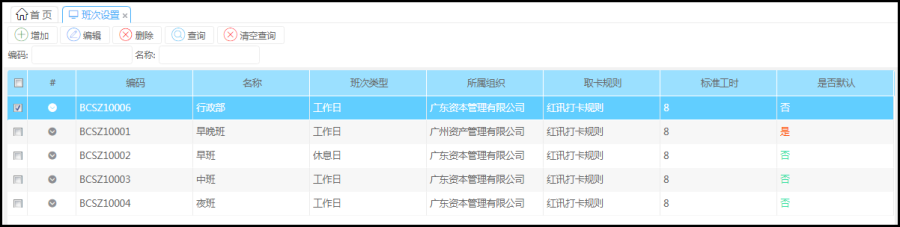
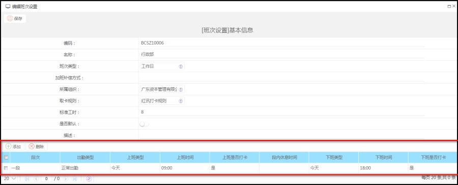
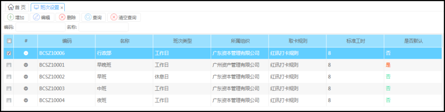
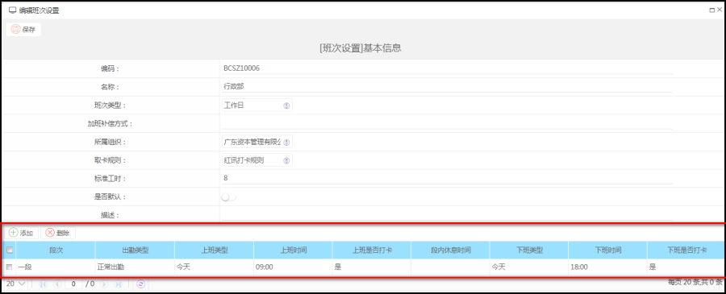

功能描述
设置班次类型，打卡规则，标准工时，每段上下班的打卡信息
是在排班向导为员工进行排班设置中使用班次，根据需求设置班次（例如工厂上班有早班和晚班，公司有行政班）
操作步骤
菜单路径：考勤管理--->考勤业务设置----->班次设置
点击班次出现首页

具体信息

注：跨天的班次，需将下班类型设置为‘明天’也就说上班上到凌晨一两点就是算第二天的。班次类型建议全部设置‘工作日’
设置班次类型，打卡规则，标准工时，每段上下班的打卡信息
是在排班向导为员工进行排班设置中使用班次，根据需求设置班次（例如工厂上班有早班和晚班，公司有行政班）
菜单路径：考勤管理--->考勤业务设置----->班次设置
点击班次出现首页

具体信息

注：跨天的班次，需将下班类型设置为‘明天’也就说上班上到凌晨一两点就是算第二天的。班次类型建议全部设置‘工作日’